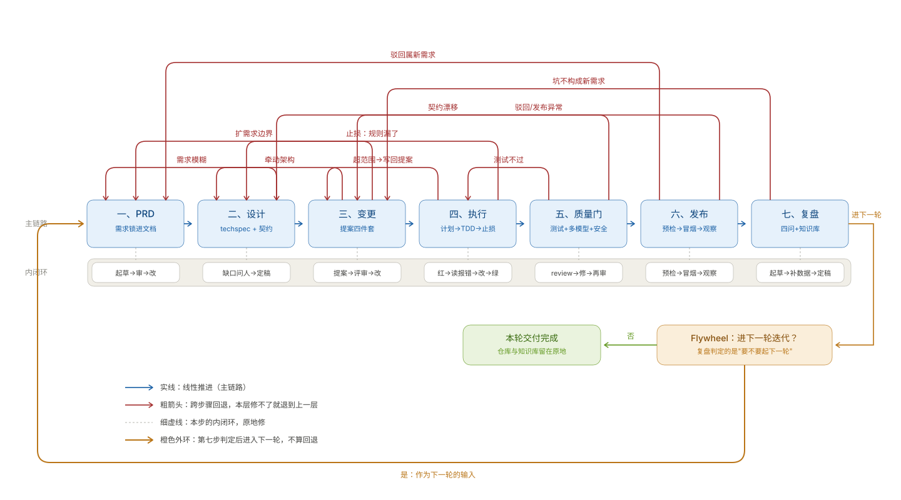
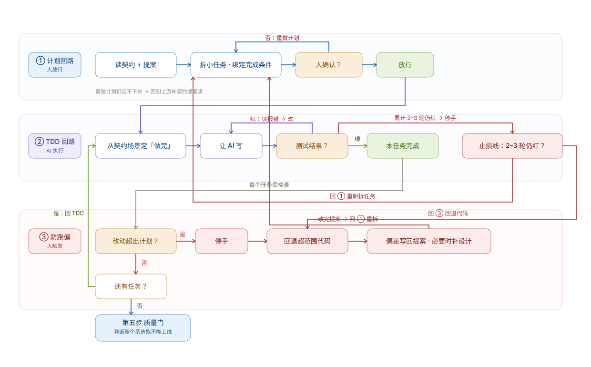

两张图：七步闭环全貌 + 第四步执行回路展开。配套说明见 loop-engineering-mapping.md。
实线是主链路，细虚线是每步内部的原地修循环，红粗箭头是跨步骤回退，橙色外环是复盘判定后进入下一轮。

三个嵌套回路：计划回路（人放行）、TDD 回路（AI 执行）、防跑偏回路（人触发）。止损线是 TDD 回路的终止条件——没有它，红绿循环就是个死循环。

源文件：diagrams/main-loop.svg、diagrams/execution-loop.svg。需要改文案或加减节点时，直接编辑 SVG 里的 text 与 rect 坐标即可。